Parrilla · Villarrica
Fuego lento, mesa larga.
Carne a la brasa en Villarrica, con 4,9 en Google.
- 568reseñas en Google
- 4,9de nota promedio
- 2redes: Instagram y Facebook
- 0teléfonos publicados para reservar
La pregunta de la mesa
¿A qué punto lo pido?
Cuatro palabras, y lo que se ve al cortar.
- 01
Jugoso
Rojo al centro, tibio. Para el lomo.
- 02
A punto
Rosado parejo. El que más se pide.
- 03
Tres cuartos
Apenas rosado al medio.
- 04
Bien cocido
Sin rosado. Mejor en cortes con grasa.
El punto de cada corte lo recomienda la casa.
La brasa no se apura: se espera.
Sobre la rejilla
Lo que pasa por la parrilla
-
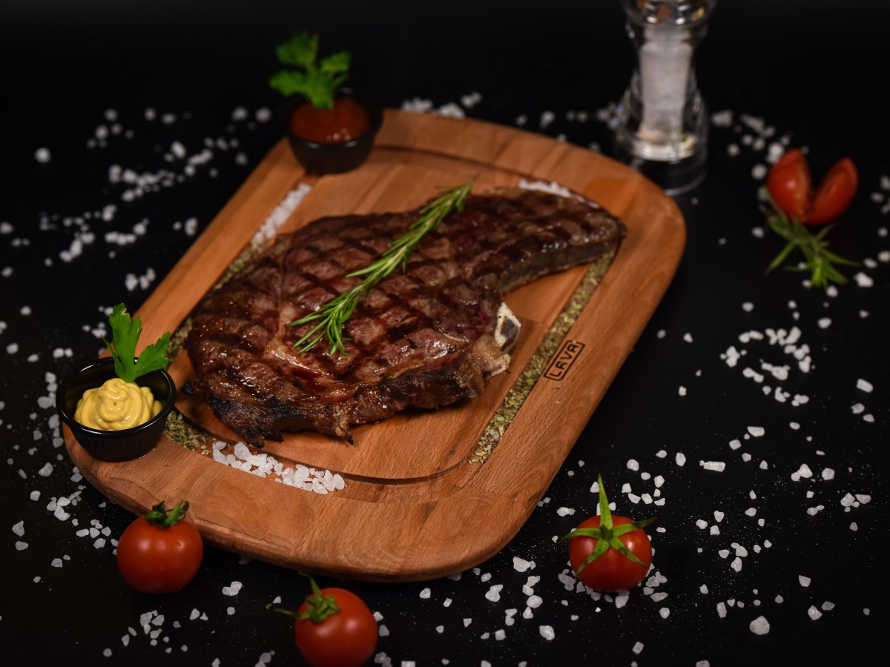
El corte grueso
Lomo vetado
Con su grasa, a fuego lento.
-
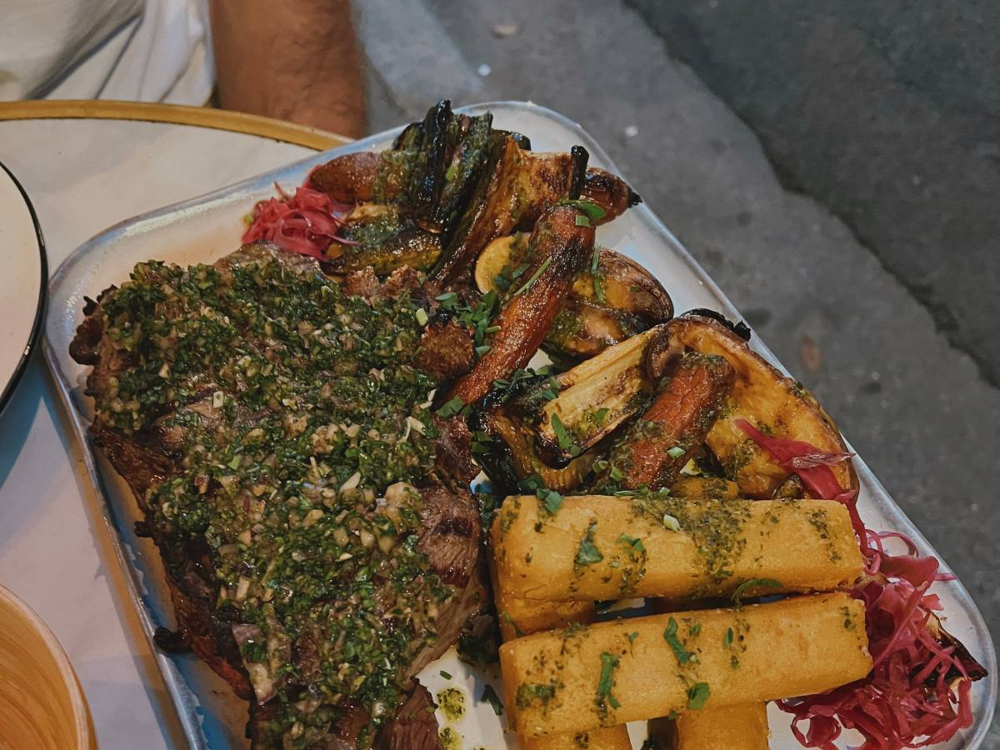
El de la casa
Entraña
Fina y rápida.
-
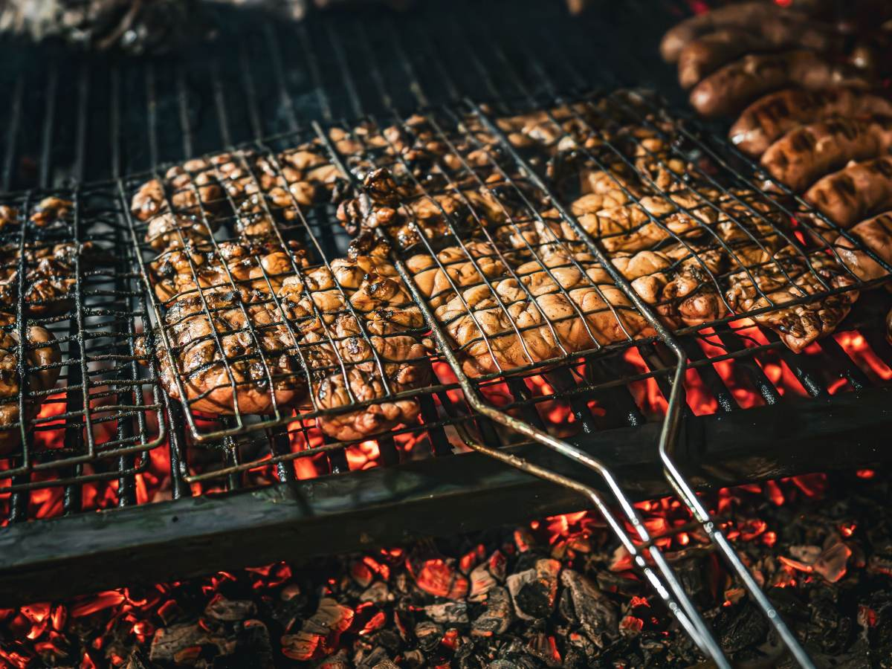
Para compartir
Costillar
Horas de brasa.
-
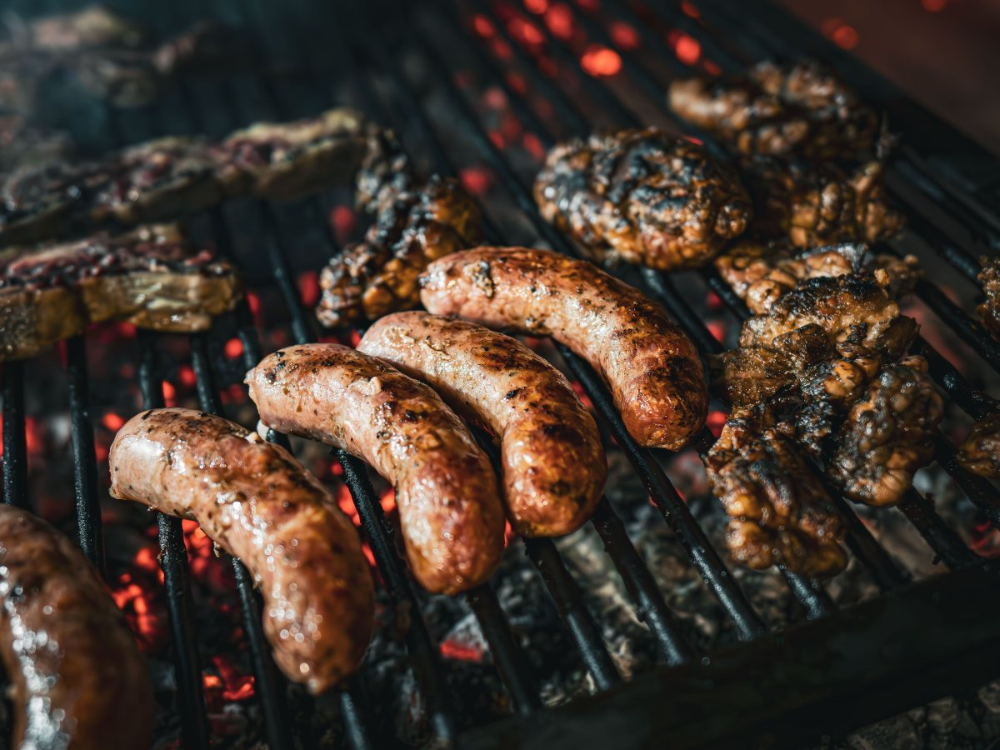
Mientras llega
Longaniza
Con pan y pebre.
-
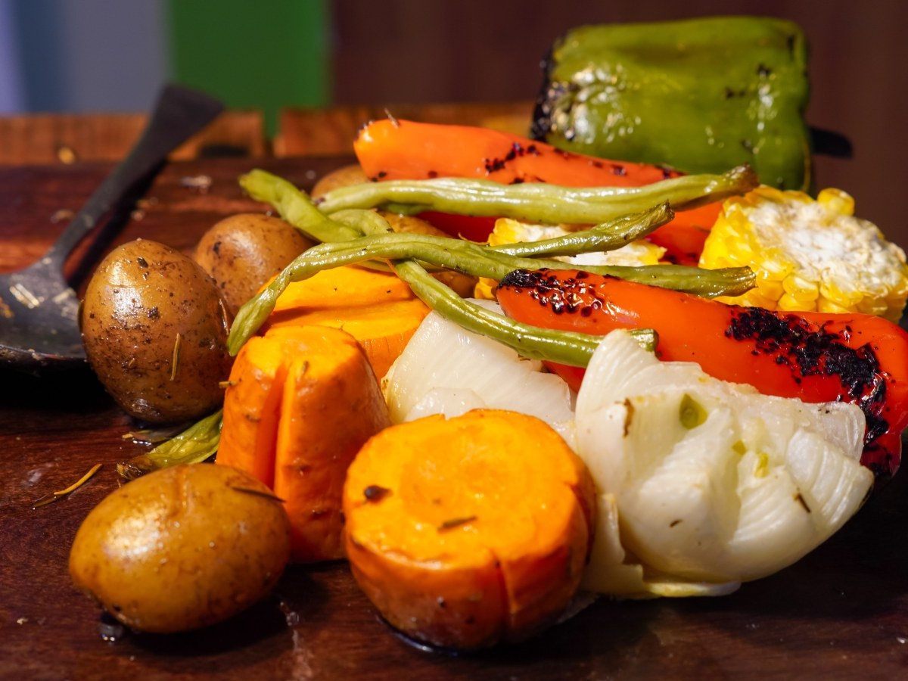
Al lado
Verduras a la brasa
Choclo, zapallo y cebolla.
-
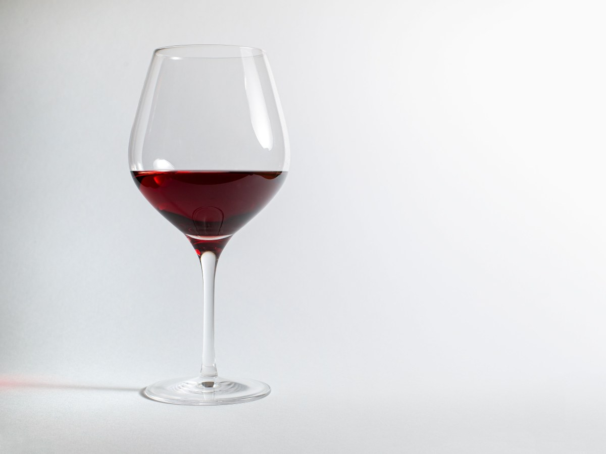
En la copa
Tinto
Para la carne roja.
Los cortes son de referencia: la carta real la entrega la casa.
568 reseñas y un 4,9.
Contadas en Google
Junto al fuego
De la brasa a la mesa
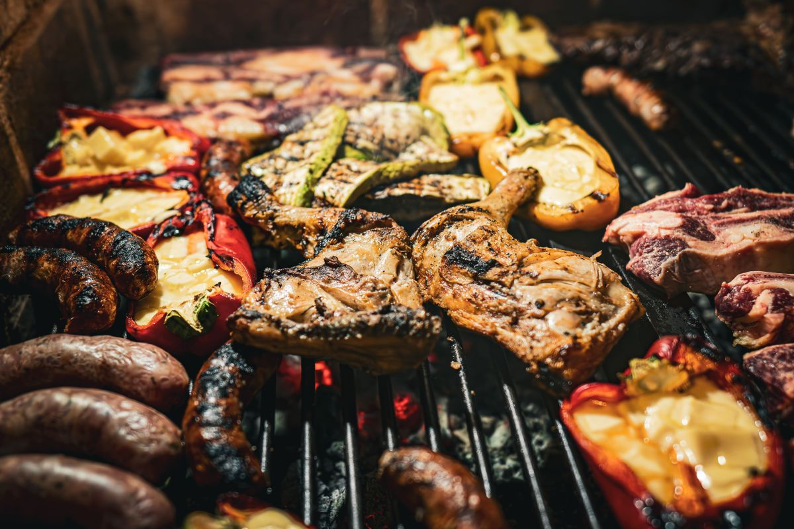
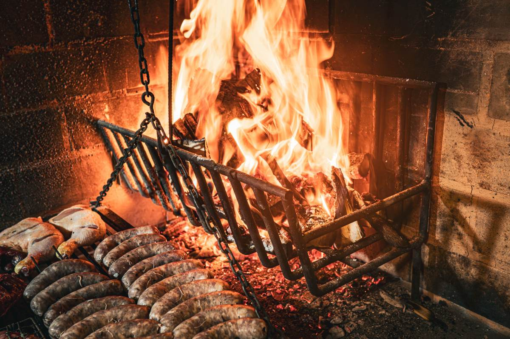
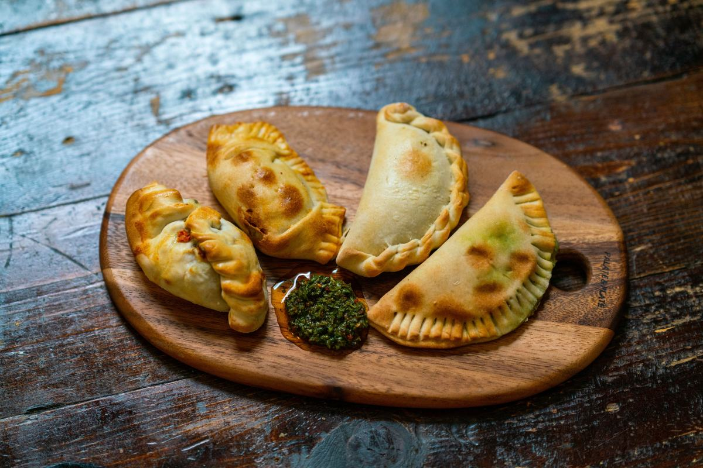
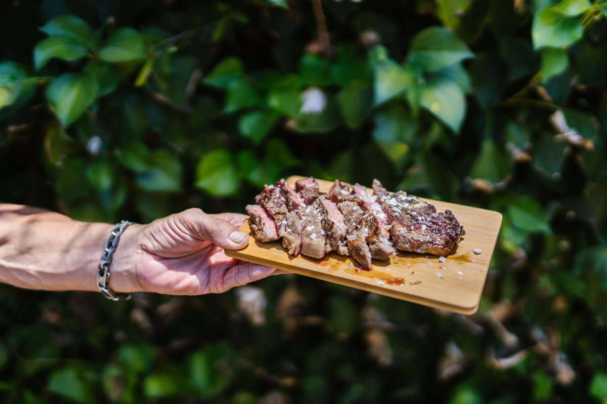
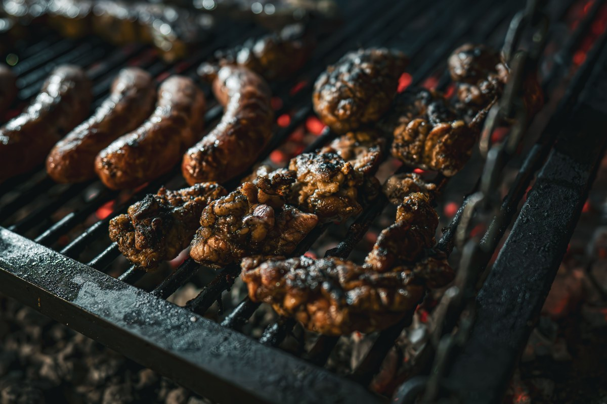
Fotos de referencia: los platos de verdad los muestra la casa.
Dónde estamos
Brasas del Lago, Villarrica
- @brasasdellago
- Brasas del lago
- Reseñas
- 568 en Google, nota 4,9
- Horario
- Falta el horario
Para reservar, hoy se escribe por Instagram.
Brasas del Lago, Villarrica Abrir en Google Maps
Para el dueño
Qué es real y qué falta
Lo verificado
El nombre, las 568 reseñas con 4,9 y las dos redes, según el registro de agosto.
Lo de ejemplo
La guía de puntos y los cortes de la parrilla.
Lo que falta
La dirección exacta, un teléfono o WhatsApp, el horario y la carta.